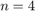
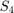

:
:This document will show some features of RepLAB.
Before trying any of the RepLAB commands, we must first add the paths:
replab_addpaths
RepLAB decomposes representations of permutation groups; this does not lose generality as all finite groups can be represented by permutation groups.
We construct the symmetric group acting on  elements.
n = 4;
The symmetric group is generated by a cyclic permutation :
g1 = [2:n 1];
and one transposition  :
:
g2 = [2 1 3:n];
Remark that permutations in RepLAB are simply row vectors of images. We use the convention that permutations act on indices  on the left, thus the image of 3 under is compatible with MATLAB syntax:
on the left, thus the image of 3 under is compatible with MATLAB syntax:
g2(3)
ans =
3
We construct the group by first accessing the group of permutations on 4 elements, then constructing a subgroup
S4 = replab.Permutations(4).subgroup({g1 g2})
S4 =
replab.perm.PermutationBSGSGroup
action: Natural permutation action on 4 elements
domainSize: 4
identity: [1, 2, 3, 4]
generator(1): [2, 3, 4, 1]
generator(2): [2, 1, 3, 4]
noting that the generators of the group are named  , ,...
, ,...
We can perform a few operations on finite groups. Let  be a random permutation, which we can obtain in (mostly) equivalent ways by either
be a random permutation, which we can obtain in (mostly) equivalent ways by either
g = randperm(n); g = S4.sample; g = S4.sampleUniformly;
But for the example, we fix the random sample.
g = [3 2 4 1]
g =
3 2 4 1
We can factor the last in the group generators:
w = S4.factorization(g)
w = replab.Word exponents: [1, 1] indices: [1, 2]
to obtain a word in the generators and . We evaluate back this word:
g1 = S4.evaluateWord(w)
g1 =
3 2 4 1
to obtain back .
We can also compute the group order or enumerate the elements of the group
S4.order
ans =
24
S4.elements
ans = Enumerator of 24 elements 1 = [1, 2, 3, 4] 2 = [1, 4, 3, 2] 3 = [1, 3, 4, 2] 4 = [1, 2, 4, 3] 5 = [1, 4, 2, 3] 6 = [1, 3, 2, 4] 7 = [3, 4, 1, 2] 8 = [3, 2, 1, 4] 9 = [3, 1, 2, 4] 10 = [3, 4, 2, 1] 11 = [3, 2, 4, 1] 12 = [3, 1, 4, 2] 13 = [4, 1, 2, 3] 14 = [4, 3, 2, 1] 15 = [4, 2, 3, 1] 16 = [4, 1, 3, 2] 17 = [4, 3, 1, 2] 18 = [4, 2, 1, 3] 19 = [2, 3, 4, 1] 20 = [2, 1, 4, 3] 21 = [2, 4, 1, 3] 22 = [2, 3, 1, 4] 23 = [2, 1, 3, 4] 24 = [2, 4, 3, 1]
a technique that works even for big groups.
S30 = replab.Permutations(30).subgroup({[2:30 1] [2 1 3:30]})
S30.order
S30 =
replab.perm.PermutationBSGSGroup
action: Natural permutation action on 30 elements
domainSize: 30
identity: 1 x 30 double
generator(1): 1 x 30 double
generator(2): 1 x 30 double
ans =
265252859812191058636308480000000
S30.elements
ans =
Enumerator of 265252859812191058636308480000000 elements
1 = [1, 2, 3, 4, 5, 6, 7, 8, 9, 10, 11, 12, 13, 14, 15, 16, 17, 18, 19, 20, 21, 22...
2 = [1, 2, 3, 4, 5, 6, 7, 8, 9, 10, 11, 12, 13, 14, 15, 16, 17, 18, 19, 20, 21, 22...
3 = [1, 2, 3, 4, 5, 6, 7, 8, 9, 10, 11, 12, 13, 14, 15, 16, 17, 18, 19, 20, 21, 22...
4 = [1, 2, 3, 4, 5, 6, 7, 8, 9, 10, 11, 12, 13, 14, 15, 16, 17, 18, 19, 20, 21, 22...
5 = [1, 2, 3, 4, 5, 6, 7, 8, 9, 10, 11, 12, 13, 14, 15, 16, 17, 18, 19, 20, 21, 22...
6 = [1, 2, 3, 4, 5, 6, 7, 8, 9, 10, 11, 12, 13, 14, 15, 16, 17, 18, 19, 20, 21, 22...
7 = [1, 2, 3, 4, 5, 6, 7, 8, 9, 10, 11, 12, 13, 14, 15, 16, 17, 18, 19, 20, 21, 22...
8 = [1, 2, 3, 4, 5, 6, 7, 8, 9, 10, 11, 12, 13, 14, 15, 16, 17, 18, 19, 20, 21, 22...
9 = [1, 2, 3, 4, 5, 6, 7, 8, 9, 10, 11, 12, 13, 14, 15, 16, 17, 18, 19, 20, 21, 22...
10 = [1, 2, 3, 4, 5, 6, 7, 8, 9, 10, 11, 12, 13, 14, 15, 16, 17, 18, 19, 20, 21, 22...
11 = [1, 2, 3, 4, 5, 6, 7, 8, 9, 10, 11, 12, 13, 14, 15, 16, 17, 18, 19, 20, 21, 22...
12 = [1, 2, 3, 4, 5, 6, 7, 8, 9, 10, 11, 12, 13, 14, 15, 16, 17, 18, 19, 20, 21, 22...
.. 265252859812191058636308479999977 elements omitted
265252859812191058636308479999990 = [29, 30, 7, 3, 23, 25, 18, 1, 5, 11, 16, 20, 24, 14, 17, 28, 6, 21, 22, 19, 10...
265252859812191058636308479999991 = [29, 30, 7, 3, 23, 25, 18, 1, 5, 11, 16, 20, 24, 14, 17, 28, 6, 21, 22, 19, 10...
265252859812191058636308479999992 = [29, 30, 7, 3, 23, 25, 18, 1, 5, 11, 16, 20, 24, 14, 17, 28, 6, 21, 22, 19, 10...
265252859812191058636308479999993 = [29, 30, 7, 3, 23, 25, 18, 1, 5, 11, 16, 20, 24, 14, 17, 28, 6, 21, 22, 19, 10...
265252859812191058636308479999994 = [29, 30, 7, 3, 23, 25, 18, 1, 5, 11, 16, 20, 24, 14, 17, 28, 6, 21, 22, 19, 10...
265252859812191058636308479999995 = [29, 30, 7, 3, 23, 25, 18, 1, 5, 11, 16, 20, 24, 14, 17, 28, 6, 21, 22, 19, 10...
265252859812191058636308479999996 = [29, 30, 7, 3, 23, 25, 18, 1, 5, 11, 16, 20, 24, 14, 17, 28, 6, 21, 22, 19, 10...
265252859812191058636308479999997 = [29, 30, 7, 3, 23, 25, 18, 1, 5, 11, 16, 20, 24, 14, 17, 28, 6, 21, 22, 19, 10...
265252859812191058636308479999998 = [29, 30, 7, 3, 23, 25, 18, 1, 5, 11, 16, 20, 24, 14, 17, 28, 6, 21, 22, 19, 10...
265252859812191058636308479999999 = [29, 30, 7, 3, 23, 25, 18, 1, 5, 11, 16, 20, 24, 14, 17, 28, 6, 21, 22, 19, 10...
265252859812191058636308480000000 = [29, 30, 7, 3, 23, 25, 18, 1, 5, 11, 16, 20, 24, 14, 17, 28, 6, 21, 22, 19, 10...
The natural representation of  simply permutes the coordinates of  :
:
rho = S4.naturalRep
rho =
Orthogonal real representation of dimension 4
dimension: 4
field: 'R'
group: replab.perm.PermutationBSGSGroup
images{1}: [0, 0, 0, 1; 1, 0, 0, 0; 0, 1, 0, 0; 0, 0, 1, 0]
images{2}: [0, 1, 0, 0; 1, 0, 0, 0; 0, 0, 1, 0; 0, 0, 0, 1]
We take two elements of :
g = [2 3 1 4] h = [2 1 4 3]
g =
2 3 1 4
h =
2 1 4 3
and their composition
gh = g(h)
gh =
3 2 4 1
and verify that we have a representation of the group
rho.image(g) * rho.image(h) rho.image(gh)
ans = (3,1) 1 (2,2) 1 (4,3) 1 (1,4) 1 ans = (3,1) 1 (2,2) 1 (4,3) 1 (1,4) 1
We can also define representations from their images. Here, we define the sign representation (using a permutation representation of it!).
dim = 2;
rho1 = S4.rep('R', dim, {[0 1; 1 0] [0 1; 1 0]})
rho2 = S4.permutationRep(2, {[2 1] [2 1]})
rho1 =
Orthogonal real representation of dimension 2
dimension: 2
field: 'R'
group: replab.perm.PermutationBSGSGroup
images{1}: [0, 1; 1, 0]
images{2}: [0, 1; 1, 0]
rho2 =
Orthogonal real representation of dimension 2
dimension: 2
field: 'R'
group: replab.perm.PermutationBSGSGroup
images{1}: [0, 1; 1, 0]
images{2}: [0, 1; 1, 0]
rho1.image(g) rho2.image(g)
ans =
1 0
0 1
ans =
(1,1) 1
(2,2) 1
RepLAB provides the irreducible decomposition of representations over the real numbers, identifying the representation type (real, complex or quaternionic):
I = rho.decomposition
I =
replab.Irreducible
parent: Orthogonal real representation of dimension 4
component(1): Isotypic component R(1)
component(2): Isotypic component R(3)
We can get isotypic components and the copies of irreducible representations contained inside
I.component(1) subrho1 = I.component(1).copy(1)
ans =
Isotypic component R(1)
copyDimension: 1
multiplicity: 1
parent: Orthogonal real representation of dimension 4
copy(1): Real-type real irreducible subrepresentation
subrho1 =
Real-type real irreducible subrepresentation
dimension: 1
field: 'R'
group: replab.perm.PermutationBSGSGroup
parent: Orthogonal real representation of dimension 4
realDivisionAlgebra: R
U(1,:): [1, 1, 1, 1]/2
I.component(2) subrho2 = I.component(2).copy(1)
ans =
Isotypic component R(3)
copyDimension: 3
multiplicity: 1
parent: Orthogonal real representation of dimension 4
copy(1): Real-type real irreducible subrepresentation
subrho2 =
Real-type real irreducible subrepresentation
dimension: 3
field: 'R'
group: replab.perm.PermutationBSGSGroup
parent: Orthogonal real representation of dimension 4
realDivisionAlgebra: R
U(1,:): [3, -1, -1, -1]/sqrt(12)
U(2,:): [0, 2, -1, -1]/sqrt(6)
U(3,:): [0, 0, 1, -1]/sqrt(2)
with their bases:
subrho1.U subrho2.U
ans =
0.5000 0.5000 0.5000 0.5000
ans =
0.8660 -0.2887 -0.2887 -0.2887
0 0.8165 -0.4082 -0.4082
0 0 0.7071 -0.7071
The commutant algebra of  is composed of all the matrices
is composed of all the matrices  that commute with , that is
that commute with , that is  for all in the group.
for all in the group.
RepLAB gives an access to that algebra:
C = rho.commutant
C =
4 x 4 real commutant matrices
field: 'R'
group: replab.perm.PermutationBSGSGroup
n: 4
rep: Orthogonal real representation of dimension 4
and we can sample generic matrices from that algebra
C.sample
ans =
0.1642 -0.1141 -0.1141 -0.1141
-0.1141 0.1642 -0.1141 -0.1141
-0.1141 -0.1141 0.1642 -0.1141
-0.1141 -0.1141 -0.1141 0.1642
or perform an orthogonal projection of arbitrary matrices in that algebra
Mgen = rand(n, n)
Mgen =
0.9294 0.9571 0.1980 0.1410
0.6168 0.8216 0.8898 0.2372
0.6304 0.2248 0.9915 0.1369
0.6234 0.3270 0.4038 0.6080
M = C.project(rand(n,n))
M =
0.5708 0.5271 0.5271 0.5271
0.5271 0.5708 0.5271 0.5271
0.5271 0.5271 0.5708 0.5271
0.5271 0.5271 0.5271 0.5708
Which is has a block diagonalization in the symmetry adapted basis:
U = I.rep.U
U =
0.5000 0.5000 0.5000 0.5000
0.8660 -0.2887 -0.2887 -0.2887
0 0.8165 -0.4082 -0.4082
0 0 0.7071 -0.7071
U*M*U'
ans =
2.1519 -0.0000 -0.0000 -0.0000
0.0000 0.0437 0.0000 0.0000
0.0000 -0.0000 0.0437 0.0000
0.0000 0.0000 0.0000 0.0437